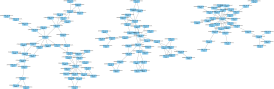

Input and output formats
This document describes the expected structure of common inputs and outputs of the RNA-clique Python scripts. Only inputs and outputs used by multiple scripts are described here. For input and output formats specific to individual scripts, see the usage guide instead. RNA-clique's inputs may be structured at two levels—these are described below.
RNA-clique's scripts expect each input file to contain data organized in specific way, and, likewise, every file output by one of RNA-clique's scripts will contain data organized in a specific way. In this document, the way in which these individual files organize or structure their data will be referred to as the input/output file formats.
RNA-clique's scripts may also expect input files to be organized in a certain way in the filesystem, and, likewise, RNA-clique scripts producing multiple output files will organize the output files in a specific way. In this document, the way in which files are organized in the filesystem will be referred to as the input/output directory structure.
RNA-clique offers some flexibility at both levels—where RNA-clique allows customization is noted in this document. If flexibility offered by RNA-clique is insufficient to get the software to recognize the input data and its structure correctly, it may be necessary to reorganize or transform the data to fit the expected structure.
In all cases, individual input and output file formats are based on existing standard file formats. Instead of reproducing the file format standards here, this document opts to link to other documents describing the standard and describe only the features of the format that are specific to RNA-clique.
Since the output of one script can be the input to another, this document does not generally organize formats or directory structures as inputs or outputs. Nevertheless, the transcriptomes may be considered the overall inputs to the RNA-clique software, and the distance matrices may be considered the overall outputs.
Transcriptomes
Transcriptomes are the overall input to the RNA-clique method; they are not output by any other part of RNA-clique. Transcriptomes may be assembled from RNA-seq reads using a transcriptome assembler such as rnaSPAdes.
Directory structure
RNA-clique expects as its input some number of assembled transcriptomes, each
belonging to a different sample. All transcriptomes should have the same
filename. By default, rna_clique.py assumes that the transcriptomes are all
named transcripts.fasta, but this can be changed with the transcripts_name
configuration option or the --transcripts-name/-t command-line option. Since
all transcriptomes must have the same filename, they cannot all be in the same
directory. Instead, RNA-clique expects each sample's transcriptome to be in its
own directory; the name of the directory containing the transcriptome is treated
as the name of the sample.
For example, if we have three samples, sample1, sample2, and sample3, the
transcriptomes could be placed in data/sample1/transcripts.fasta,
data/sample2/transcripts.fasta, and data/sample3/transcripts.fasta, and the
paths to the directories containing the transcripts.fasta file
(data/sample1, data/sample2, and data/sample3) could be provided as the
inputs to RNA-clique. RNA-clique would automatically determine that the names of
the samples are sample1, sample2, and sample3.
All transcriptomes must be in directories with different names. Providing, for
example, both data1/sample1 and data2/sample1 as inputs is an error.
Example structure
.
└── data
├── sample1
│ └── transcripts.fasta
├── sample2
│ └── transcripts.fasta
└── sample3
└── transcripts.fasta
File format
For RNA-clique, transcriptomes are FASTA
files in which every
sequence (preceded by a sequence header line starting with >) is the
nucleotide sequence of one transcript isoform of a specific gene. Each such
sequence is referred to as a transcript.
RNA-clique expects to read metadata about a transcript from the transcript's
sequence header by parsing the header using a regular expression. By default,
the regular expression used is
^.*cov_([0-9]+(?:\.[0-9]+))_g([0-9]+)_i([0-9]+), which parses transcript
headers written by rnaSPAdes, but it can be changed by providing the
transcript_id_regex config option or --transcript-id-regex/-p command-line
options to accommodate other transcript ID formats. (The short argument mnemonic
is p for "pattern".)
Example transcriptome file
Transcripts are truncated in this example.
>NODE_1_length_15392_cov_52.745747_g0_i0
TGGCTTACAACATTAACTAAGCTTCGGTGGTGGTTATAATATGTGCGCACGCAATTCTGA
GATTGCACTGAAGTTGCTTACCCCTGAGACACTTCAAAAAAGGCTTGACCACGGAGACCC
>NODE_2_length_15368_cov_52.711796_g0_i1
GCAGTCGTCTCCACCGTCCTCTCCTCCTCCGTGGAGCAAGTGGAGTCGATGGTTGTGGAG
ATTGTTGAGAGGTCTTTGGAATTCTGTCTCCTGTATCTCGAAAAATCATCATATGAATGC
>NODE_3_length_15104_cov_20.145068_g1_i0
ATTCCGCCGCCAGATGCGCACCAGCAAGCAACGCGACCCAACTCCAAGGTCGATTCCCCC
GACCGCCAAGACCGCGACCGAAGACGGCCGCCTCCACCGACGCCTGGTTCTTCTCTCCTC
Top genes
RNA-clique produces "top genes files" from the input transcriptomes. The top genes file for a sample contains a subset of the sequences from that sample's transcriptome. Specifically, a top genes file should contain the top \(n\) genes from the transcriptome by \(k\)-mer coverage. A gene's \(k\)-mer coverage is defined as the transcript with maximum \(k\)-mer coverage among the gene's isoforms.
Directory structure
Unlike the input transcriptomes, the top genes are all organized in a
single directory. Unless the top genes directory is specified manually using the
top_genes_dir config option or --top-genes-dir/-O1 command line argument,
the directory containing the top genes is od1 underneath the analysis
root. The top genes for sample SAMPLE_NAME are found in
SAMPLE_NAME_top.fasta.
Example structure
File format
A top genes file is merely a subset of sequences from a transcriptome file, so
it follows the same FASTA
format. Again, each
sequence in the file is a transcript, and each FASTA sequence header should
provide a \(k\)-mer coverage, gene ID, and isoform ID parsable using a regular
expression. By default,
the regular expression used is
^.*cov_([0-9]+(?:\.[0-9]+))_g([0-9]+)_i([0-9]+), which parses transcript
headers written by rnaSPAdes, but it can be changed by providing the
transcript_id_regex config option or --transcript-id-regex/-p command-line
options.
Example top genes file
Transcripts are truncated in this example.
>NODE_1_length_15392_cov_52.745747_g0_i0
TGGCTTACAACATTAACTAAGCTTCGGTGGTGGTTATAATATGTGCGCACGCAATTCTGA
GATTGCACTGAAGTTGCTTACCCCTGAGACACTTCAAAAAAGGCTTGACCACGGAGACCC
>NODE_2_length_15368_cov_52.711796_g0_i1
GCAGTCGTCTCCACCGTCCTCTCCTCCTCCGTGGAGCAAGTGGAGTCGATGGTTGTGGAG
ATTGTTGAGAGGTCTTTGGAATTCTGTCTCCTGTATCTCGAAAAATCATCATATGAATGC
>NODE_3_length_15104_cov_20.145068_g1_i0
ATTCCGCCGCCAGATGCGCACCAGCAAGCAACGCGACCCAACTCCAAGGTCGATTCCCCC
GACCGCCAAGACCGCGACCGAAGACGGCCGCCTCCACCGACGCCTGGTTCTTCTCTCCTC
Gene matches tables
RNA-clique produces a gene matches table for each pair of samples in the analysis. The gene matches table for samples \(A\) and \(B\) maps each gene among the top \(n\) genes of \(A\) to a small number (usually just 1) of best matches in \(B\). RNA-clique interprets the best matches of a gene in \(A\) as likely homologs of that gene in \(B\).
Directory structure
RNA-clique places all gene matches tables in a single directory. Unless the
directory in which to read or write the gene matches tables is specified
manually using the tables_dir config option or --table-dir/-O2 command
line argument, the directory containing the gene matches is od2 underneath the
analysis root. The gene matches table for a pair of samples SAMPLE_A and
SAMPLE_B is found under the root gene matches table directory at
SAMPLE_A--SAMPLE_B.h5, SAMPLE_A--SAMPLE_B.pkl, SAMPLE_B--SAMPLE_A.h5, or
SAMPLE_B--SAMPLE_A.pkl.
Example structure
File format
Gene matches tables saved by RNA-clique are serialized
Pandas dataframes. In the current version of
RNA-clique, new gene matches tables are serialized in an HDF5
store as a
group associated with the key gene_matches using
Pandas's
table
format. In previous versions of RNA-clique, gene matches tables were serialized
in Python's Pickle
format. Neither serialization
format is designed to be compatible with software other than Pandas, and
exporting gene matches tables is not currently supported by RNA-clique. To
convert a gene matches table to a format usable by other software, you will need
to load the table with Pandas and then use one of Pandas's functions for
exporting dataframes to other formats, such as
DataFrame.to_csv
Table structure
The table below summarizes the current schema of the gene matches tables. Each column is derived from a BLAST high-scoring segment pair (HSP, also known informally as a "hit") between a transcript in the first sample and a transcript in the second. Most of these columns come from BLAST's tabular output format (format 6). Any extra columns, if present, are ignored.
| Column | Type | Description |
|---|---|---|
pident |
float |
Percentage of identical nucleotides in gene pair alignment. |
length |
int |
Total length of aligned region. |
mismatch |
int |
Number of mismatching nucleotides in gene pair alignment. |
gapopen |
int |
Number of gap openings in gene pair alignment. |
qstart |
int |
Start position of alignment in the second sample's transcript. |
qend |
int |
End position of alignment in the second sample's transcript. |
sstart |
int |
Start position of alignment in the first sample's transcript. |
send |
int |
End position of alignment in the first sample's transcript. |
evalue |
float |
Expected number of chance alignments with same or better score. |
bitscore |
int |
Database size-independent measure of alignment quality. |
gaps |
int |
Number of gaps in the gene pair alignment. |
nident |
int |
Number of identical nucleotides in the gene pair alignment. |
sstrand |
str |
Orientation of first sample's transcript relative to second sample's. |
qgene |
int |
Gene ID of second sample's transcript. |
qiso |
int |
Isoform ID of second sample's transcript. |
sgene |
int |
Gene ID of first sample's transcript. |
siso |
int |
Isoform ID of second sample's transcript. |
reverse |
bool |
Whether the HSP comes from BLASTing the second sample against the first. |
ssample |
str |
Path to first sample FASTA file. |
qsample |
str |
Path to second sample FASTA file. |
Example
The example below is part of a gene matches table but does not reflect the
actual binary HDF5 format of the file. The example section of the gene matches
table has been converted to Markdown using the Pandas
DataFrame.to_markdown
method.
| pident | length | mismatch | gapopen | qstart | qend | sstart | send | evalue | bitscore | gaps | nident | sstrand | qgene | qiso | sgene | siso | reverse | ssample | qsample |
|---|---|---|---|---|---|---|---|---|---|---|---|---|---|---|---|---|---|---|---|
| \(98.036\) | \(560\) | \(11\) | $$ | \(18\) | \(577\) | \(156\) | \(715\) | $$ | \(974\) | $$ | \(549\) | plus |
\(27520\) | $$ | \(2010\) | \(3\) | False | rnac_out/od1/SRR2321383_top.fasta |
rnac_out/od1/SRR7990322_top.fasta |
| \(94.188\) | \(499\) | \(23\) | \(2\) | \(948\) | \(1440\) | \(499\) | \(1\) | $$ | \(756\) | \(6\) | \(470\) | minus |
\(32798\) | $$ | \(3655\) | $$ | True | rnac_out/od1/SRR2321383_top.fasta |
rnac_out/od1/SRR7990322_top.fasta |
| \(99.184\) | \(2328\) | \(19\) | $$ | \(1\) | \(2328\) | \(1705\) | \(4032\) | $$ | \(4194\) | $$ | \(2309\) | plus |
\(2449\) | $$ | \(470\) | \(1\) | False | rnac_out/od1/SRR2321383_top.fasta |
rnac_out/od1/SRR7990322_top.fasta |
| \(98.151\) | \(2001\) | \(23\) | \(3\) | \(240\) | \(2231\) | \(1996\) | \(1\) | $$ | \(3478\) | \(14\) | \(1964\) | minus |
\(3757\) | $$ | \(4188\) | $$ | True | rnac_out/od1/SRR2321383_top.fasta |
rnac_out/od1/SRR7990322_top.fasta |
| \(97.255\) | \(1093\) | \(25\) | \(3\) | \(2\) | \(1092\) | \(1185\) | \(96\) | $$ | \(1847\) | \(5\) | \(1063\) | minus |
\(12128\) | $$ | \(14414\) | $$ | False | rnac_out/od1/SRR2321383_top.fasta |
rnac_out/od1/SRR7990322_top.fasta |
| \(98.602\) | \(930\) | \(10\) | \(1\) | \(1\) | \(930\) | \(1054\) | \(128\) | $$ | \(1642\) | \(3\) | \(917\) | minus |
\(15021\) | $$ | \(12763\) | $$ | False | rnac_out/od1/SRR2321383_top.fasta |
rnac_out/od1/SRR7990322_top.fasta |
| \(82.753\) | \(1867\) | \(249\) | \(28\) | \(352\) | \(2153\) | \(265\) | \(2123\) | $$ | \(1596\) | \(73\) | \(1545\) | plus |
\(3022\) | $$ | \(1125\) | $$ | False | rnac_out/od1/SRR2321383_top.fasta |
rnac_out/od1/SRR7990322_top.fasta |
| \(99.329\) | \(298\) | \(2\) | $$ | \(1281\) | \(1578\) | \(1\) | \(298\) | \(8.75 \times 10^{-152}\) | \(540\) | $$ | \(296\) | plus |
\(57449\) | $$ | \(276\) | \(1\) | True | rnac_out/od1/SRR2321383_top.fasta |
rnac_out/od1/SRR7990322_top.fasta |
| \(99.417\) | \(515\) | \(3\) | $$ | \(611\) | \(1125\) | \(1\) | \(515\) | $$ | \(935\) | $$ | \(512\) | plus |
\(31581\) | $$ | \(16211\) | $$ | True | rnac_out/od1/SRR2321383_top.fasta |
rnac_out/od1/SRR7990322_top.fasta |
| \(99.089\) | \(549\) | \(5\) | $$ | \(78\) | \(626\) | \(3\) | \(551\) | $$ | \(987\) | $$ | \(544\) | plus |
\(28192\) | $$ | \(33701\) | $$ | True | rnac_out/od1/SRR2321383_top.fasta |
rnac_out/od1/SRR7990322_top.fasta |
Gene matches graph
The gene matches graph is an undirected graph (network) in which each vertex represents a specific gene in one of the samples, and an edge exists between two vertices from a pair of samples if that pair of genes appears in the gene matches table for that pair of samples. The graph can be thought of as describing which pairs of genes in different samples are likely homologs.
Like any undirected graph, the gene matches graph can be separated into (connected) components—maximal sets of vertices mutually reachable by traversing the edges. RNA-clique classifies components by how many vertices and edges they have. Ideal components are those that have as many vertices as there are samples and are cliques (complete subgraphs, that is, subgraphs where every pair of vertices has an edge). Ideal components are taken to represent genes that have orthologs in all samples.
Directory structure
A gene matches graph is stored in a single file. Unless a path to the gene
matches graph is provided explicitly via the graph config option or
--graph/-g command-line argument, the gene matches graph is assumed to
reside at graph.pkl under the RNA-clique analysis root.
File format
Gene matches graphs are NetworkX
graphs
serialized in Python's binary Pickle
format, which is neither
human-readable nor compatible with other programming languages. To export gene
matches graphs to other representations, use
export_graph.py.
Example
The image below is a visualization in SVG format produced from a gene matches
graph by exporting to GraphML with export_graph.py
and importing into Cytoscape. Only a few components
are shown.

Distance matrix
The distance matrix describes the degree of dissimilarity between the genomes of the samples being analyzed and is the main output of RNA-clique. The distance matrix is symmetric and hollow—that is, all entries along the main diagonal are \(0\). All entries of the matrix are values in the range \([0, 1]\).
The distance between a pair of samples is computed by restricting the gene matches table for that pair of samples to gene pairs found in ideal components, then computing the following over the rows of the gene matches table:
where \(k\) is the number of rows in the gene matches table, and \(\iota_i\), \(\lambda_i\), and \(\gamma_i\) are the number of identical nucleotides, alignment length, and total gap length for the \(i^{th}\) row of the table.
Directory structure
The distance matrix is stored in a single file. Unless a path to the distance
matrix is provided explicitly via the matrix config option or --matrix/-m
command-line argument, the distance matrix will be at distance_matrix.h5 under
the RNA-clique analysis root.
File format
A distance matrix is a Pandas
dataframe
serialized in an HDF5
store. The
distance matrix is stored under the key matrix and is stored using Pandas's
fixed
format.
Since HDF5 is a binary format, the output distance matrix file is not
human-readable, and since the HDF5 store contains a dataframe serialized in a
Pandas-specific format, the file is not likely to be usable with other software
not based on Pandas. To export a distance matrix for use with other software,
use export_matrix.py.
Example
The following example is a distance matrix converted to CSV format using the
csv format option of export_matrix.py. Samples are labeled on the rows;
since the matrix is symmetric, column labels have been omitted.
rnac_out/od1/SRR2321383_top.fasta,0.0,0.005388803504220092,0.0054305311443104045,0.005459213437854515,0.005512249049959638,0.005736910464039689,0.00747255775698311,0.007539593449521158,0.007182140678310776,0.007276675683252087,0.007248347134681538,0.007283538806219465,0.00762743569213341,0.00743863245673041,0.007230214862207701,0.0073832767780768254
rnac_out/od1/SRR2321384_top.fasta,0.005388803504220092,0.0,0.005444154410878668,0.005457044881951446,0.005509492270546363,0.005524904289722484,0.007358911632464738,0.00734145312059913,0.007178641884408139,0.007222263591986068,0.007299566949444612,0.007294928786675735,0.007656986703430995,0.0073262905661900446,0.007408281261711856,0.007638552765508823
rnac_out/od1/SRR2321385_top.fasta,0.0054305311443104045,0.005444154410878668,0.0,0.005693270624845291,0.005504512466459697,0.005623807465660282,0.007460847632579519,0.007338287207960742,0.007026428740023054,0.007345203662465187,0.007298558140709513,0.007255076165936527,0.007773889001222752,0.007491181297100733,0.007461249801562505,0.007582443616558755
rnac_out/od1/SRR2321386_top.fasta,0.005459213437854515,0.005457044881951446,0.005693270624845291,0.0,0.005382294872687209,0.005624631102239679,0.007461600494472286,0.0075545366408871035,0.00722308988794688,0.007302489419096259,0.007593104402212075,0.007312652480260233,0.007717985706596547,0.007298352807919292,0.007431485603066781,0.007506446547060221
rnac_out/od1/SRR2321387_top.fasta,0.005512249049959638,0.005509492270546363,0.005504512466459697,0.005382294872687209,0.0,0.005408467697660717,0.007469933549435503,0.00747932919860101,0.0071926795719216485,0.007245129665339076,0.007446632250291478,0.007292153397566585,0.0075851662624996236,0.007313530586610903,0.007327216346131236,0.007692388221551249
rnac_out/od1/SRR2321388_top.fasta,0.005736910464039689,0.005524904289722484,0.005623807465660282,0.005624631102239679,0.005408467697660717,0.0,0.007555198645292785,0.007452169760737729,0.007267972973651089,0.00728552657657327,0.007427030130130788,0.007357451543864015,0.007678875003598042,0.007341109656108671,0.007358340294100507,0.007776166721858891
rnac_out/od1/SRR7990321_top.fasta,0.00747255775698311,0.007358911632464738,0.007460847632579519,0.007461600494472286,0.007469933549435503,0.007555198645292785,0.0,0.005588505140222338,0.0072828077441650175,0.0072497139542041485,0.007404599487716344,0.007604547828924467,0.00788919346350089,0.007324928371612728,0.00723491884565872,0.007607016896798138
rnac_out/od1/SRR7990322_top.fasta,0.007539593449521158,0.00734145312059913,0.007338287207960742,0.0075545366408871035,0.00747932919860101,0.007452169760737729,0.005588505140222338,0.0,0.007301401193487594,0.007086699780622347,0.007402177949342384,0.007471282891062408,0.007883648522377027,0.007332780007601444,0.007302255769002343,0.007709591684544236
rnac_out/od1/SRR8003736_top.fasta,0.007182140678310776,0.007178641884408139,0.007026428740023054,0.00722308988794688,0.0071926795719216485,0.007267972973651089,0.0072828077441650175,0.007301401193487594,0.0,0.005540287068859703,0.0072693817846589395,0.007325561099070532,0.007543946579835303,0.007294093624627043,0.007345516049973433,0.007336003543873897
rnac_out/od1/SRR8003737_top.fasta,0.007276675683252087,0.007222263591986068,0.007345203662465187,0.007302489419096259,0.007245129665339076,0.00728552657657327,0.0072497139542041485,0.007086699780622347,0.005540287068859703,0.0,0.007391276328118516,0.007457925962836311,0.0077668702857649685,0.007315902653215641,0.007282014518250357,0.007465439374296728
rnac_out/od1/SRR8003753_top.fasta,0.007248347134681538,0.007299566949444612,0.007298558140709513,0.007593104402212075,0.007446632250291478,0.007427030130130788,0.007404599487716344,0.007402177949342384,0.0072693817846589395,0.007391276328118516,0.0,0.005707789174069651,0.006126693346289233,0.005851743283501044,0.005801252770533637,0.005964403443675155
rnac_out/od1/SRR8003754_top.fasta,0.007283538806219465,0.007294928786675735,0.007255076165936527,0.007312652480260233,0.007292153397566585,0.007357451543864015,0.007604547828924467,0.007471282891062408,0.007325561099070532,0.007457925962836311,0.005707789174069651,0.0,0.00588497358210044,0.005482496045834437,0.005388058635962769,0.005730100739785911
rnac_out/od1/SRR8003755_top.fasta,0.00762743569213341,0.007656986703430995,0.007773889001222752,0.007717985706596547,0.0075851662624996236,0.007678875003598042,0.00788919346350089,0.007883648522377027,0.007543946579835303,0.0077668702857649685,0.006126693346289233,0.00588497358210044,0.0,0.0058109335333090244,0.00607229411236707,0.005964136017753867
rnac_out/od1/SRR8003756_top.fasta,0.00743863245673041,0.0073262905661900446,0.007491181297100733,0.007298352807919292,0.007313530586610903,0.007341109656108671,0.007324928371612728,0.007332780007601444,0.007294093624627043,0.007315902653215641,0.005851743283501044,0.005482496045834437,0.0058109335333090244,0.0,0.005699313542929577,0.005701078777889641
rnac_out/od1/SRR8003761_top.fasta,0.007230214862207701,0.007408281261711856,0.007461249801562505,0.007431485603066781,0.007327216346131236,0.007358340294100507,0.00723491884565872,0.007302255769002343,0.007345516049973433,0.007282014518250357,0.005801252770533637,0.005388058635962769,0.00607229411236707,0.005699313542929577,0.0,0.005664813883747902
rnac_out/od1/SRR8003762_top.fasta,0.0073832767780768254,0.007638552765508823,0.007582443616558755,0.007506446547060221,0.007692388221551249,0.007776166721858891,0.007607016896798138,0.007709591684544236,0.007336003543873897,0.007465439374296728,0.005964403443675155,0.005730100739785911,0.005964136017753867,0.005701078777889641,0.005664813883747902,0.0